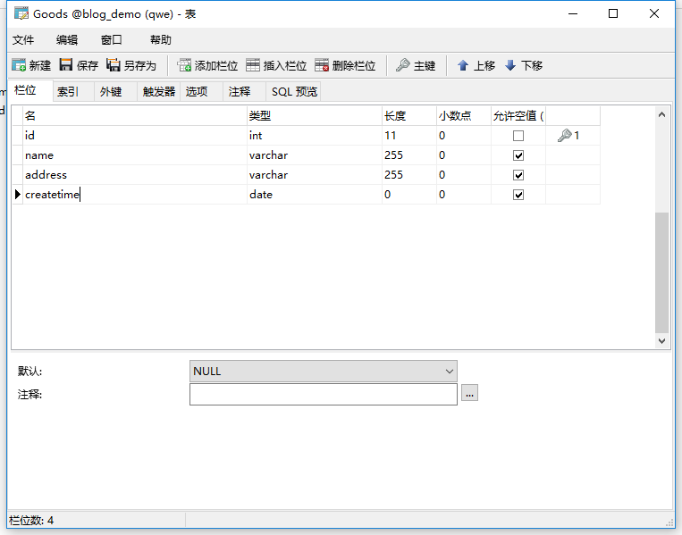
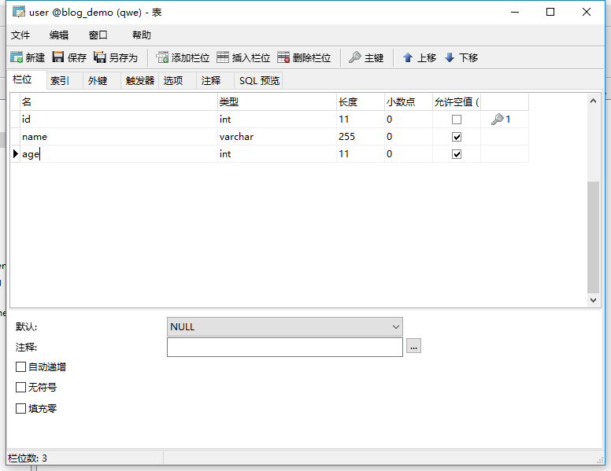

参考链接：
Spring
Spring百度百科
Rod Johnson
spring是一个开放源代码的设计层面框架，他解决的是业务逻辑层和其他各层的松耦合问题，因此它将面向接口的编程思想贯穿整个系统应用。Spring是于2003 年兴起的一个轻量级的Java 开发框架，由Rod Johnson 创建。简单来说，Spring是一个分层的JavaSE/EEfull-stack(一站式)轻量级开源框架。
Spring是独特的，因为若干个原因：
它定位的领域是许多其他流行的framework没有的。Spring致力于提供一种方法管理你的业务对象。
Spring是全面的和模块化的。Spring有分层的体系结构，这意味着你能选择使用它孤立的任何部分，它的架构仍然是内在稳定的。因此从你的学习中，你可得到最大的价值。例如，你可能选择仅仅使用Spring来简单化JDBC的使用，或用来管理所有的业务对象。
它的设计从底部帮助你编写易于测试的代码。Spring是用于测试驱动工程的理想的framework。
Spring对你的工程来说，它不需要一个以上的framework。Spring是潜在地一站式解决方案，定位于与典型应用相关的大部分基础结构。它也涉及到其他framework没有考虑到的内容。
使用spring前，需要导入spring的jar包，你可以去官网下载。
spring最基础的几个jar包：
spring必须依赖的日志包，需要外部导入：commons-logging-1.2.jar
spring-aop-4.3.8.RELEASE.jar
spring-beans-4.3.8.RELEASE.jar
spring-context-4.3.8.RELEASE.jar
spring-core-4.3.8.RELEASE.jar
spring-expression-4.3.8.RELEASE.jar
把这些jar包，添加到类路径中（Add Build Path）。
spring主要有7大模块组成。每个模块既可以单独使用，又可以与其他模块组合使用。
core模块：
spring的core 模块是spring的核心容器。它实现了IOC 模式，提供了spring框架的基础功能。模块中包含的BeanFactory 类是spring的核心类，负责对bean的管理与配置。
Context模块：
spring的Context模块 继承了BeanFactory 类，并添加了事件处理，国际化，数据校验等功能。
AOP模块：
spring 集成了所有的AOP功能。通过事务管理可以使任意的spring 管理的对象AOP化。
DAO模块：
DAO模块提供了jdbc的抽象层，大幅减少代码的编写，并且提供了对声明式事务和编程式事务的支持。
ORM映射模块：
ORM映射模块提供了对现有的ORM框架的支持。
WEB模块：
WEB模块建立在context 模块的基础上，它提供了Servlet 监听器的Context 和 WEB 应用的上下文。它对现有的WEB框架 如struts ,jsf 等提供了集成。
MVC模块：
其建立在spring的核心功能上，实现了控制逻辑与业务逻辑清晰的分离。
package com.entity; import org.springframework.stereotype.Component; public class Student { private String name; public Student(){ System.out.println("this is student 无参构造函数"); } public Student(String name){ this.name=name; System.out.println(" this is student 有参构造函数"); } public String getName() { return name; } public void setName(String name) { this.name = name; } public void sayHelloWorld(Student stu){ System.out.println(stu+" say hello world"); } @Override public String toString() { return "Student [name=" + name + "]"; } }
<?xml version="1.0" encoding="UTF-8"?> <beans xmlns="http://www.springframework.org/schema/beans" xmlns:p="http://www.springframework.org/schema/p" xmlns:mybatis="http://mybatis.org/schema/mybatis-spring" xmlns:xsi="http://www.w3.org/2001/XMLSchema-instance" xmlns:mvc="http://www.springframework.org/schema/mvc" xmlns:context="http://www.springframework.org/schema/context" xmlns:tx="http://www.springframework.org/schema/tx" xsi:schemaLocation="http://www.springframework.org/schema/mvc http://www.springframework.org/schema/mvc/spring-mvc-4.3.xsd http://www.springframework.org/schema/beans http://www.springframework.org/schema/beans/spring-beans.xsd http://www.springframework.org/schema/tx http://www.springframework.org/schema/tx/spring-tx-4.3.xsd http://www.springframework.org/schema/context http://www.springframework.org/schema/context/spring-context-4.3.xsd http://mybatis.org/schema/mybatis-spring http://mybatis.org/schema/mybatis-spring.xsd"> <!-- 为spring的ioc 容器（applicationContext ）添加java bean 对象，通过<bean>标签, 当创建applicationContext 容器时，spring框架 会执行中存在的bean对象的无参构造函数 实例化bean对象 给开发者使用。 --> <bean id="student" class="com.entity.Student"> <!-- 属性注入，通过bean对象的set 方法注入 属性值 --> <property name="name" value="xiaobing"></property> <!-- 构造器注入（使用对象的构造函数来注入属性值） ,index="0" ，表示构造函数的第一个参数,type表示该属性的类型 <constructor-arg value="xiaohei" index="0" type="java.lang.String"/> --> </bean> </beans>
public class test { /* * 这是使用普通的方法。 * 1.先创建Student对象。 * 2.给对象赋值。 * 3.调用对象的方法。 * */ @Test public void test1(){ Student stu=new Student(); stu.setName("xiaoming"); stu.sayHelloWorld(stu); } /* * 使用spring： * 之前的1，2两个步骤可以交给spring框架来完成 * */ @Test public void test2(){ //Student stu=new Student(); //stu.setName("xiaoming"); /* * 0.创建spring的配置文件（名字随意取）在src目录下，我这个叫applicationContext.xml * 2.根据spring的配置文件，创建spring的容器对象， * 3.从spring的容器对象中获取想要的实例对象。 * 4.调用实例对象的方法。 * */ ApplicationContext app=new ClassPathXmlApplicationContext("applicationContext.xml"); Student stu=(Student) app.getBean("student"); stu.sayHelloWorld(stu); } }
普通方法：
this is student 无参构造函数
User [name=xiaoming] say hello world
使用spring的方法：
this is student 无参构造函数
User [name=xiaobing] say hello world
①：spring框架会 通过spring的配置文件（applicationContext.xml）来创建 spring的ioc 容器（applicationContext)
ApplicationContext app=new ClassPathXmlApplicationContext("applicationContext.xml");
②：当spring的ioc 容器创建时，spring框架会根据 配置文件的信息来创建java bean对象，并存放在容器中。（ioc 容器创建时，会执行配置文件中bean标签对象的Javabean对象的无参构造函数），其中被创建的java bean对象，必须符合 java bean的格式 （get/set方法, 无参构造函数，private属性）。
<bean id="student" class="com.entity.Student"> <property name="name" value="xiaobing"></property> </bean>
③：此时，当容器创建完成后，容器中就存在已经实例化的bean对象，可以通过ioc 容器的getBean（） 方法来获取这些bean对象。
Student stu=(Student) app.getBean("student");
④：直接调用从容器获取的bean对象的方法。
stu.sayHelloWorld(stu);
注意：控制反转与依赖注入是一个意思。
Spring框架的核心功能有两个：
Spring容器作为超级大工厂，负责创建、管理所有的Java对象，这些Java对象被称为Bean。
Spring容器管理容器中Bean之间的依赖关系，Spring使用一种被称为"依赖注入（控制反转）"的方式来管理Bean之间的依赖关系。
使用依赖注入（控制反转），不仅可以为Bean注入普通的属性值，还可以注入其他Bean的引用。依赖注入（控制反转）是一种优秀的解耦方式，其可以让Bean以配置文件组织在一起，而不是以硬编码的方式耦合在一起。
当某个Java对象（调用者）需要调用另一个Java对象（被依赖对象）的方法时，在传统模式下通常有两种做法：
注意上面的主动二字，这必然会导致调用者与被依赖对象实现类的硬编码耦合，非常不利于项目升级的维护。(可以理解为牵一发而动全身，或者对象与对象之间的关系太紧密，耦合度太高。)
使用Spring框架之后，调用者无需主动获取，创建被依赖对象，调用者只要被动接受Spring容器为调用者的成员变量赋值即可，由此可见，使用Spring后，调用者获取被依赖对象的方式由原来的主动获取，变成了被动接受——所以称之为控制反转。
另外从Spring容器的角度来看，Spring容器负责将被依赖对象赋值给调用者要使用的成员变量——相当于为调用者注入它依赖的实例，因此被称之为依赖注入。
spring容器实现方式有两种：
BeanFactory :ioc容器的基本实现,是spring框架的基础设施，面向spring本身。
ApplicationContext : 是BeanFactory的子接口，提供更多的功能，面向开发者,几乎所有的场合都使用ApplicationContext，而不是更底层的BeanFactory。
ApplicationContext app=new ClassPathXmlApplicationContext("applicationContext.xml");
ApplicationContext是Spring容器最常用的接口，该接口有如下两个实现类：
ClassPathXmlApplicationContext: 从类加载路径下搜索配置文件，并根据配置文件来创建Spring容器。
FileSystemXmlApplicationContext: 从文件系统的相对路径或绝对路径下去搜索配置文件，并根据配置文件来创建Spring容器。
applicationContext.xml
<bean id="student" class="com.entity.Student"> <property name="name" value="xiaobing"></property> </bean>
test.java
ApplicationContext app=new ClassPathXmlApplicationContext("applicationContext.xml"); Student stu=(Student) app.getBean("student"); stu.sayHelloWorld(stu);
id : ioc容器可以用getBean方法，通过该标识符来获取bean对象。
class : javabean对象的全类名。通过反射的方式,来寻找javaBean对象，并在容器中创建该bean对象。
注意：ioc容器创建时，会调用bean标签对应的对象的无参构造函数，来创建该bean对象。所以对象必须有无参构造函数。
请自行百度
属性注入通过setter方法注入Bean的属性值或依赖的对象。其通过<property> 标签，使用name 属性指定Bean对象中的某个属性，value 指定其属性值。
<bean id="student" class="com.entity.Student"> <property name="name" value="xiaobing"></property> </bean>
<bean id="student" class="com.entity.Student"> <!--构造器注入 ,index="0" ，表示构造函数的第一个参数--> <constructor-arg value="xiaohei" index="0" type="java.lang.String"/> </bean>
... public Student(){ System.out.println("this is student 无参构造函数"); } public Student(String name){ this.name=name; System.out.println(" this is student 有参构造函数"); } ...
构造方法注入通过对象的有参构造方法，注入Bean的属性值或依赖的对象。其通过<constructor-arg> 标签，使用index属性指定有参构造方法中的那个参数，value 指定其属性值。type指定属性的类型
注意：当有多个有参构造方法时，可以使用index , type来区别不同的构造方法
package com.entity; public class Schoolcard { private Integer id; private String name; public Schoolcard(){ System.out.println("this is Schoolcard 无参构造函数"); } public Schoolcard(Integer id,String name){ this.id=id; this.name=name; System.out.println("this is Schoolcard 有参构造函数"); } public Integer getId() { return id; } public void setId(Integer id) { this.id = id; } public String getName() { return name; } public void setName(String name) { this.name = name; } @Override public String toString() { return "Schoolcard [id=" + id + ", name=" + name + "]"; }; }
private Schoolcard scard; public Schoolcard getScard() { return scard; } public void setScard(Schoolcard scard) { this.scard = scard; } @Override public String toString() { return "Student [name=" + name + ", scard=" + scard + "]"; }
<bean id="school_card" class="com.entity.Schoolcard"> <property name="id" value="1"></property> <property name="name" value="xiaohuang"></property> </bean> <bean id="student" class="com.entity.Student"> <!-- 属性注入，通过bean对象的set 方法注入 属性值 --> <property name="name" value="xiaoming"></property> <!-- 引用其他的bean标签, ref 属性表示被引用的bean--> <property name="scard" ref="school_card"></property> </bean>
@Test public void test3(){ ApplicationContext app=new ClassPathXmlApplicationContext("applicationContext.xml"); Student stu=(Student) app.getBean("student"); System.out.println(stu); }
this is Schoolcard 无参构造函数
this is student 无参构造函数
Student [name=xiaoming, scard=Schoolcard [id=1, name=xiaohuang]]
其中：
<bean id="student" class="com.entity.Student"> <!-- 属性注入，通过bean对象的set 方法注入 属性值 --> <property name="name" value="xiaoming"></property> <!-- 引用其他的bean标签, ref 属性表示被引用的bean--> <property name="scard" ref="school_card"></property> </bean>
ref 属性表示被引用的bean
applicationContext.xml
<bean id="student2" class="com.entity.Student"> <!-- 属性注入，通过bean对象的set 方法注入 属性值 --> <property name="name" value="xiaoming"></property> <!--使用内部bean ,内部beam有没有id，无所谓--> <property name="scard"> <bean id="schoolcard2" class="com.entity.Schoolcard"> <property name="id" value="2"></property> <property name="name" value="hehe"></property> </bean> </property> </bean>
test.java
//内部bean @Test public void test4(){ ApplicationContext app=new ClassPathXmlApplicationContext("applicationContext.xml"); Student stu=(Student) app.getBean("student2"); System.out.println(stu); }
运行结果：
this is Schoolcard 无参构造函数
this is student 无参构造函数
Student [name=xiaoming, scard=Schoolcard [id=2, name=hehe]]
若一名学生有多个学生证(小学学生证，~)。
private List<Schoolcard> cards; public List<Schoolcard> getCards() { return cards; } public void setCards(List<Schoolcard> cards) { this.cards = cards; } @Override public String toString() { return "Student [name=" + name + ", cards=" + cards + "]"; }
<bean id="school_card" class="com.entity.Schoolcard"> <property name="id" value="1"></property> <property name="name" value="xiaohuang"></property> </bean> <bean id="school_card2" class="com.entity.Schoolcard"> <property name="id" value="3"></property> <property name="name" value="mingming"></property> </bean> <bean id="student3" class="com.entity.Student"> <!-- 属性注入，通过bean对象的set 方法注入 属性值 --> <property name="name" value="xiaoming"></property> <!-- 为bean中的集合（list）属性赋值,可以使用list元素，或者使用内部bean的方式--> <property name="cards"> <list> <ref bean="school_card"/> <ref bean="school_card2"/> <bean class="com.entity.Schoolcard"> <property name="id" value="4"></property> <property name="name" value="digid"></property> </bean> </list> </property> </bean>
3.结果：
this is Schoolcard 无参构造函数
this is Schoolcard 无参构造函数
this is student 无参构造函数
Student [name=xiaoming, cards=[Schoolcard [id=1, name=xiaohuang], Schoolcard [id=3, name=mingming]]]
总结：使用list元素或内部bean的方式，给集合属性赋值。
Spring的ioc容器可以自动装配Bean，需要做的是在<bean>的autowire属性中指定自动装配的模式。
模式有两种：
byType:根据类型自动装配，注意：若ioc容器中有多个与目标bean类型一致的bean，在这种情况下，spring无法判定，不能执行自动装配。
byName: 根据名称自动装配：必须把目标的名称与对象中的对应的属性名设置的相同。
<bean id="student4" class="com.entity.Student" autowire="byName"> <property name="name" value="xiaoming"></property> </bean>
Spring允许继承bean的配置，被继承的bean 称为父bean。
①：子bean从父bean中继承配置，包括属性配置。
②：子bean 也可以覆盖从父bean哪里继承过来的配置。
③：父bean 可以作为配置模板（抽象bean），也可以作为普通bean。若想作为配置模板，设置<bean>的abstract属性 为true(相当于抽象bean)，这样spring 不会实例化该bean.该bean只能被继承。
<bean id="school_card" class="com.entity.Schoolcard"> <property name="id" value="1"></property> <property name="name" value="xiaohuang"></property> </bean> <!--abstract="true" , 表示该bean 是一个抽象bean，无法被实例化，只能被继承--> <bean id="school_card2" class="com.entity.Schoolcard" abstract="true"> <property name="id" value="2"></property> <property name="name" value="xiaohehe"></property> </bean> <!--school_card3 这个bean 继承school_card这个bean --> <bean id="school_card3" class="com.entity.Schoolcard" parent="school_card"> </bean> <!--school_card4 这个bean 继承school_card这个bean ，但有些属性的值覆盖了父bean的属性 --> <bean id="school_card4" class="com.entity.Schoolcard" parent="school_card"> <property name="name" value="yiyi"></property> </bean>
当spring中的一个bean的作用域为 singleton 时，IOC的容器中只会存在一个共享的该bean的实例，并且所有对该bean的引用，只要id 与该bean的id 相符合，就只会返回bean的单一实例。
<bean id="school_card" class="com.entity.Schoolcard" scope="singleton"> <property name="id" value="1"></property> <property name="name" value="xiaohuang"></property> </bean>
Schoolcard scard=(Schoolcard) app.getBean("school_card"); Schoolcard scard2=(Schoolcard) app.getBean("school_card"); System.out.println(scard==scard2);
例如：上面代码的运行结果为 true。
prototype 作用域的bean 会导致每次对该bean的请求时 ，会创建一个新的bean实例，但是,当bean创建完毕并将实例对象返回给使用者时，容器不在拥有该实例对象的引用，因此，必须使用bean的后置处理器清除prototype的bean。
scope="prototype"，表示每次向容器获取同一个bean，容器会创建新的bean对象给使用者使用。
例如：上面代码的运行结果为 false。
管理过程:
Schoolcard.java
public void create(){ System.out.println("Schoolcard create "); } public void destory(){ System.out.println("Schoolcard destory"); }
<!-- 在bean 中声明并设置init-method ，destroy-method。 为bean指定创建 和 销毁的方法 --> <bean id="school_card" class="com.entity.Schoolcard" init-method="create" destroy-method="destory"> <property name="id" value="1"></property> <property name="name" value="xiaohuang"></property> </bean>
添加c3p0 的jar包，mysql的驱动包。
创建外部属性文件，db.properties
jdbc.driverClass=com.mysql.jdbc.Driver jdbc.jdbcUrl=jdbc:mysql://localhost:3306/blog_demo jdbc.user=root jdbc.password=123456
不同的数据源，它们的外部属性文件就不一样。
C3P0数据源 有这些属性: driverClass , jdbcUrl , user , password
dbcp数据源 有这些属性: driver , url, username , password
<!-- 导入外部属性文件 --> <context:property-placeholder location="classpath:db.properties/> <bean id="dataSource" class="com.mchange.v2.c3p0.ComboPooledDataSource"> <!-- 如果使用dbcp数据源 ，就使用这些 <property name="driver" value="${jdbc.driver}"/> <property name="url" value="${jdbc.url}"/> <property name="username" value="${jdbc.username}"/> <property name="password" value="${jdbc.password}"/> --> <!-- 使用外部属性文件的属性 --> <bean id="dataSource" class="${jdbc.driverClass}"> <property name="driverClass" value="com.mysql.jdbc.Driver"/> <property name="jdbcUrl" value="${jdbc.jdbcUrl}"/> <property name="user" value="${jdbc.user}"/> <property name="password" value="${jdbc.password}"/> </bean> </bean>
Spring的表达式语言（SpEL），是一个支持运行时查询，操作的表达式语言。语法类似EL。其使用 #{}作为定界符。#{xxx}中的字符都被认为是 SpEL表达式。
<bean id="school_card" class="com.entity.Schoolcard"> <property name="id" value="1"></property> <property name="name" value="xiaohuang"></property> </bean> <bean id="student3" class="com.entity.Student"> <property name="name" value="xiaoming"></property> <!-- 使用SpEL表达式，使得该bean，引用其他bean，类似于<ref>标签 --> <property name="scard" value="#{school_card}"></property> <!-- 使用SpEL表达式，使得该bean，使用其他bean的属性 --> <property name="xxx" value="#{school_card.id}"></property> <!-- 使用SpEL表达式，在bean中使用三目运算符 --> <property name="xxx" value="#{school_card.id > 2 ? '5':'7'}"></property> </bean>
特定注解：
@Component :基本注解，用于标识一个组件，该组件将被spring管理。
@Respository :标识持久层组件。
@Service: 标识服务层，业务层组件。
@Controller ：标识表现层组件。
Spring 对于扫描的到的组件。spring 有默认的命名方法，一般是第一个字母小写，也可以在注解中通过value 属性来给组件命名。
当在组件上加上注解时，还需在配置文件中添加扫描配置：
<!-- 扫描指定包，及其子包的指定注解，@Repository @Autowired，@Service，@Controller ,....,对有注解标记的类或组件，自动注入（通过执行无参构造函数）到ioc 容器中--> <context:component-scan base-package="com.entity"/> <context:component-scan base-package="com.dao,com.Controller"/> <!-- 可以通过 resource-pattern ，过滤，指定需要扫描的资源--> <context:component-scan base-package="com.service" resource-pattern="**/*.class" /> <context:component-scan base-package="com.entity"> <!-- context:include-filter 子节点，表示要包含的目标组件 xxx 为注解的全类名 --> <context:include-filter type="annotation" expression="xxx"/> <context:exclude-filter type="annotation" expression="xxx"/> <!--context:exclude-filter 子节点，表示要排除在外的目标组件 xxx 为注解的全类名 --> </context:component-scan>
base-package ：指定需要扫描的基类包及其子包。当需要扫描多个包时，用逗号隔开。
resource-pattern ：过滤，指定需要扫描的资源 ,默认值是： **/*.class 表示为基类包的所有类。
- @Component , 当spring的ioc 容器启动并扫描到该注解时，会自动把该类实例化（执行bean的无参构造函数），注入到ioc 容器中（相当于在applicationContext.xml 配置文件中用xml的方式配置bean）
- @Component注解可以对所有的组件进行自动注入到ioc 容器中。
- @Component是所有受Spring管理组件的通用形式；而@Repository、@Service和 @Controller则是@Component的细化，用来表示更具体的用例(例如，分别对应了持久化层、服务层和表现层)。
- 也就是说，你能用@Component来注解你的组件类，
- 但如果用@Repository、@Service 或@Controller来注解它们，
- 你的类也许能更好地被工具处理，或与切面进行关联。
com.entity.User
@Component(value="User") public class User { private String name; public User(){ System.out.println("this is user 无参构造函数"); } public User(String name){ this.name=name; System.out.println(" this is user 有参构造函数"); } public String getName() { return name; } public void setName(String name) { this.name = name; } public void sayHelloWorld(User us){ System.out.println(us+" say hello world"); } @Override public String toString() { return "User [name=" + name + "]"; } }
com.Controller.UserController
@Controller(value="UserController") public class UserController { public void add(){ System.out.println(" UserController "); } }
applicationContext.xml
<context:component-scan base-package="com.service"/> <context:component-scan base-package="com.dao,com.Controller"/> <context:component-scan base-package="com.entity"/>
test.java:
ApplicationContext app=new ClassPathXmlApplicationContext("applicationContext.xml"); User us = (User) app.getBean("User"); System.out.println(us); UserController uscontroller=(UserController) app.getBean("UserController"); System.out.println(uscontroller);
运行结果：
this is Student 无参构造函数
this is user 无参构造函数
User [name=null]
com.Controller.UserController@3869f4
参考链接：
@Autowired注解、@Resource注解和@Service注解
@Controller(value="UserController") public class UserController { /** 把UserServiceImpl 这个bean，从ioc容器中取出，装配到 UserController这个bean中，供 UserController 这个bean使用。 否则程序报错。相当于 UserController 这个bean 引用了 UserServiceImpl 这个bean **/ @Autowired private UserServiceImpl usimpl; public void add(){ System.out.println(" UserController "); usimpl.addUser(); } }
把UserServiceImpl 这个bean，从ioc容器中取出，装配到 UserController这个bean中，供 UserController 这个bean使用。否则程序报错.
@Autowired,相当于 UserController 这个bean 引用了 UserServiceImpl 这个bean,同时省去了在 UserController 类中 get/set UserServiceImpl属性的方法
applicationContext.xml
<bean id="UserImpl" class="com.service.UserServiceImpl"></bean> <bean id="ucontroller" class="com.Controller.UserController" > <property name="usimpl" ref="UserImpl" /> </bean>
AOP(Aspect-Oriented Programming), 即 面向切面编程, 它与 OOP( Object-Oriented Programming, 面向对象编程) 相辅相成, 提供了与 OOP 不同的抽象软件结构的视角.
在 OOP 中, 我们以类(class)作为我们的基本单元, 而 AOP 中的基本单元是 Aspect(切面)
public int add(int i,int j){ System.out.println(" this is "+i+" + "+j); return i+j; } public int sub(int i,int j){ System.out.println(" this is "+i+" - "+j); return i-j; } public int mul(int i,int j){ System.out.println(" this is "+i+" * "+j); return i*j; } public int div(int i,int j){ System.out.println(" this is "+i+" / "+j); return i/j; }
上面是对两个参数之加减乘除的方法，里面有对该方法的日志输出。试想一想，如果对这四个方法的日志输出都修改，一次修改需要改四个地方，N次修改就需要修改4n次，并且这四个方法的日志，都差不多，是否可以抽象出来。
AOP可以分离与业务无关的代码出来,使得方法保持纯洁。日志输入与方法的逻辑是无关的。
切面（Aspect）：
本质上为一段程序代码，这些代码将通过 切入点" 切入到 " 程序流程中。
连接点（Joinpoint）:
程序执行过程中的任意一点，都可以是连接点。如方法的调用或特定的异常被抛出。
切入点（Pointcut）:
连接点的集合。切面与程序流程的交叉点。
通知（Advice）:
某个切入点被横切后，所采取的措施。也就是在切入点处拦截程序。通过 “通知” 来执行切面。各种类型的通知包括“after”、“before”和“throws”通知。
前置通知：在目标方法执行前，执行。
后置通知：在目标方法执行后（无论是否发生异常），再执行。
异常通知： 在目标方法出现异常时，执行的代码，可以在出现特定异常时，执行的通知代码。
返回通知，在方法正常结束执行的代码,可以访问到方法的返回值
....
引入（Introduction）:
对一个已经写好的类，在运行期间，动态的向这个类添加属性与方法。
目标对象（Target Object）:
包含连接点的对象。也被称作被通知或被代理对象。AOP 会注意 “ 目标对象” 的变动（属性变化，方法调用），随时准备向目标 “ 注入切面”。
AOP代理（AOP Proxy）:
向目标对象应用通知后创建的对象。 在Spring中，AOP代理可以是JDK动态代理或者CGLIB代理。
织入（Weaving）:
把切面功能引用到目标对象的过程。
②：若在xml 配置文件中 打不出来<aop:config>标签，则在配置文件上加上。
参考链接：
找不到<aop:config>标签
xmlns:aop="http://www.springframework.org/schema/aop" http://www.springframework.org/schema/aop http://www.springframework.org/schema/aop/spring-aop-4.3.xsd
public class mathCaculate { public mathCaculate(){ System.out.println("this is wucan mathCaculate"); } public void add(int i,int j){ System.out.println(i+j); } public void sub(int i,int j){ System.out.println(i-j); } public void mul(int i,int j){ System.out.println(i*j); } public void div(int i,int j){ System.out.println(i/j); } }
//定义一个切面类 public class Aspect { public Aspect(){ System.out.println("this is wucan Aspect"); } public void before(){ System.out.println("this is 前置通知"); } public void after(){ System.out.println("this is 后置通知"); } }
<!-- 注入目标类 -->
<bean id="math" class="com.aop.mathCaculate"></bean>
<!-- 注入切面类 -->
<bean id="Aspect" class="com.aop.Aspect"></bean>
<!-- AOP 进行 配置 -->
<aop:config>
<!-- 详细 配置切面 -->
<aop:aspect id="ap" ref="Aspect">
<!-- 详细 配置切面上的切入点 -->
<aop:pointcut expression="execution(public * *(..))" id="ptt"/>
<!-- 切面上的前置通知 -->
<aop:before method="before" pointcut-ref="ptt"/>
<aop:after method="after" pointcut-ref="ptt"/>
</aop:aspect>
</aop:config>
ApplicationContext app=new ClassPathXmlApplicationContext("applicationContext.xml"); mathCaculate mc=(mathCaculate) app.getBean("math"); mc.add(4, 3); mc.sub(4, 3); mc.mul(4, 3); mc.div(4, 3);
this is 前置通知
7
this is 后置通知
this is 前置通知
1
this is 后置通知
this is 前置通知
12
this is 后置通知
this is 前置通知
1
this is 后置通知
<!-- AOP 进行 配置 --> <aop:config> <!-- 详细 配置切面，切面为 Aspect 类--> <aop:aspect id="ap" ref="Aspect"> <!-- 详细 配置切面上的切入点 切入点为切面上的特定的代码。 expression 属性表示 切面上的所有public 方法。 表示：切面上的所有public 方法，都为切入点。 --> <aop:pointcut expression="execution(public * *(..))" id="ptt"/> <!-- 切面上的前置通知 前置通知引用的对象为ptt，即为切入点（切面上特定的代码）。 前置通知执行的方法为 所引用的对象上的 before 方法。 --> <aop:before method="before" pointcut-ref="ptt"/> <aop:after method="after" pointcut-ref="ptt"/> </aop:aspect> </aop:config>
在使用spring框架配置AOP的时候，不管是通过XML配置文件还是注解的方式都需要定义pointcut”切入点”
例如定义切入点表达式 execution (* com.sample.service.impl..*. *(..))
execution()是最常用的切点函数，其语法如下所示：
整个表达式可以分为五个部分：
1、execution(): 表达式主体。
2、第一个*号：表示返回类型， *号表示所有的类型。
3、包名：表示需要拦截的包名，后面的两个句点表示当前包和当前包的所有子包，com.sample.service.impl包、子孙包下所有类的方法。
4、第二个*号：表示类名，*号表示所有的类。
5、*(..):最后这个星号表示方法名，*号表示所有的方法，后面括弧里面表示方法的参数，两个句点表示任何参数
流程：
当程序流程运行到切入点时，会查看该切入点在那个切面上，并且该切面的前置或后置等通知是否与该切入点进行了绑定。若绑定，则根据通知的类型，若是前置通知，则先执行前置通知，再执行原本的程序流程。
@Component(value="mathCaculate") public class mathCaculate { public mathCaculate(){ System.out.println("this is wucan mathCaculate"); } public void add(int i,int j){ System.out.println(i+j); } public void sub(int i,int j){ System.out.println(i-j); } public void mul(int i,int j){ System.out.println(i*j); } public void div(int i,int j){ System.out.println(i/j); } }
//声明一个切面类，1.把该类注入到容器中，2.在声明为切面 /* 在切面类中，设置通知 */ //声明一个切面类，1.把该类注入到容器中，2.在声明为切面 // @Order(1) 制定切面的优先级，值越小，优先级越高。当有多个切面中使用 @Order(1) @Component(value="Aspect") @org.aspectj.lang.annotation.Aspect public class Aspect { public Aspect(){ System.out.println("this is wucan Aspect"); } //声明该方法是一个前置通知，在目标处之前执行 @Before(value="execution(public void com.aop.mathCaculate.*(int,int))") public void before(){ System.out.println("this is 前置通知"); } //声明该方法是一个后置通知，在目标方法之后（无论是否发生异常）执行 @After(value="execution(public void com.aop.mathCaculate.*(int,int))") public void after(){ System.out.println("this is 后置通知"); } /* * 返回通知，在方法正常结束执行的代码 * 返回通知，可以访问到方法的返回值 * returning="result" 表示返回值叫result * */ @AfterReturning(value="execution(* com.aop.mathCaculate.*(int,int))", returning="result") public void returning(Object result){ System.out.println(" this is 返回通知 , 返回值是"+result); } /* * 异常通知 * 在目标方法出现异常时，执行的代码，可以在出现特定异常时，执行的通知代码 * */ @AfterThrowing(value="execution(public void com.aop.mathCaculate.*(int,int))" ,throwing="exception") public void throwException(NullPointerException exception){ System.out.println(" this is 异常通知 , 返回值是"+exception); } /* * 环绕通知, * 其需要携带 ProceedingJoinPoint 的类型的参数 * */ @Around(value="execution(public void com.aop.mathCaculate.*(int,int))") public void around(ProceedingJoinPoint pjp){ System.out.println(" this is 环绕通知 "); } }
<!-- 扫包，注入bean --> <context:component-scan base-package="com.aop"/> <!-- 使Aspectj 注解 生效 --> <aop:aspectj-autoproxy></aop:aspectj-autoproxy>
使Aspectj 注解 生效：
<aop:aspectj-autoproxy></aop:aspectj-autoproxy>
ApplicationContext app=new ClassPathXmlApplicationContext("applicationContext.xml"); mathCaculate mc=(mathCaculate) app.getBean("mathCaculate"); mc.add(4, 3); mc.sub(4, 3); mc.mul(4, 3); mc.div(4, 3);
@Order注解：
@Order(1) ：制定切面的优先级，值越小，优先级越高。当有多个切面中使用
@Pointcut注解：
Aspect.java
/* * 定义一个方法，专门表示切点表达式，其他使用该切点表达式时，直接使用该方法即可。 * */ @Pointcut("execution(* com.aop.mathCaculate.*(int,int))") public void pointcut_execution(){} //声明该方法是一个前置通知，在目标处之前执行 @Before(value="pointcut_execution()") public void before(){ System.out.println("this is 前置通知"); }
事务是一系列的动作，事务是一个最小的逻辑执行单元，整个事务不能分开执行，要么同时执行，要么同时不执行，绝不能执行一部分（比如：当你从银行转账，如果你的账户钱少了，那别人的账户钱多了。一定不能出现你的钱少了，别人的钱不变。）。
Spring 通过spring aop 来支持事务管理，它把事务代码从业务方法中分离出来。
spring 事务的属性：传播行为，隔离级别，只读，超时属性。
参考链接：
spring事务属性—1
spring事务属性—2
<!-- 配置 jdbc的事务管理 --> <bean id="transactionManager" class="org.springframework.jdbc.datasource.DataSourceTransactionManager"> <property name="datasource" ref="dataSource"></property> </bean> <!-- 启动事务注解 --> <tx:annotation-driven transaction-manager="transactionManager"/>
/* * 这段代码：把购物车的商品添加到订单中。 * 1.添加购物车的商品到订单中 * 2.删除购物车的商品。 * */ @Transactional public void addOrders(Goods goods){ //1. int a=orderController.insertOrder(goods); //2. int b=goodsController.deletegoods(goods); }
当该方法内发生异常时，被事务注解标记的方法，会产生回滚。形成没有执行该方法的效果。
参考链接：
xml方式
在实际的项目开发中，我们需要把Spring 和 Mybatis 整合在一起。使用Spring的依赖注入来减少代码的耦合，使得mybatis 更加便捷的完成数据库操作。
Spring框架的jar 包。
Mybatis框架的 jar 包。
Mybatis 整合 Spring 中间件的 jar 包（版本最好要1.3.1 或更高版本，低版本有问题）。
aspectj 的jar 包（spring的aop 是基于aspectj）。
数据库驱动 jar包，
数据源c3p0 或 dbcp 的jar包。
jstl 标签库的jar 包（选要）。


Goods.java:
package com.entity; public class Goods { private Integer id; private String name; private String address; private String createtime; public Goods(){} public Integer getId() { return id; } public void setId(Integer id) { this.id = id; } public String getName() { return name; } public void setName(String name) { this.name = name; } public String getAddress() { return address; } public void setAddress(String address) { this.address = address; } public String getCreatetime() { return createtime; } public void setCreatetime(String string) { this.createtime = string; } @Override public String toString() { return "Goods [id=" + id + ", name=" + name + ", address=" + address + ", createtime=" + createtime + "]"; } }
User.java:
package com.entity; public class User { private Integer id; private String name; private Integer age; public User(){} public Integer getId() { return id; } public void setId(Integer id) { this.id = id; } public String getName() { return name; } public void setName(String name) { this.name = name; } public Integer getAge() { return age; } public void setAge(Integer age) { this.age = age; } @Override public String toString() { return "User [id=" + id + ", name=" + name + ", age=" + age + "]"; } }
// Goods 类的代理接口Goodsdao: public interface Goodsdao { public int insertGoods(Goods goods); public int deleteGoods(Goods goods); public int updateGoods(Goods goods); public Goods selectByidorname(Goods goods); } //User类的代理接口 Userdao： public interface Userdao { public int insert(User user); public int delete(User user); public int update(User user); public User select(User user); public List<User> selectAll(); }
GoodsMapper.xml:
<?xml version="1.0" encoding="UTF-8"?> <!DOCTYPE mapper PUBLIC "-//mybatis.org//DTD Mapper 3.0//EN" "http://mybatis.org/dtd/mybatis-3-mapper.dtd"> <!-- 为mapper指定唯一的命名空间，在不用接口式编程的情况下，随便取名 --> <mapper namespace="com.dao.Goodsdao"> <!--#{id}:从传递过来的参数取出id值--> <select id="selectByidorname" resultType="com.entity.Goods" parameterType="com.entity.Goods"> SELECT * from goods where 1=1 <if test="id !=null">and id=#{id}</if> <if test="name !=null">and name=#{name}</if> </select> <insert id="insertGoods" parameterType="com.entity.Goods"> insert into goods <trim prefix="(" suffix=")" suffixOverrides="," > <if test='name != null and name != "" '> name, </if> <if test='address != null and address != "" '> address, </if> <if test='createtime != null and createtime != "" '> createtime, </if> </trim> <trim prefix="values (" suffix=")" suffixOverrides="," > <if test='name != null and name != "" '> #{name}, </if> <if test='address != null and address != "" '> #{address}, </if> <if test='createtime != null and createtime != "" '> #{createtime}, </if> </trim> </insert> <delete id="deleteGoods" parameterType="com.entity.Goods"> delete from goods where 1=1 <if test="id !=null">and id=#{id}</if> <if test="name !=null">and name=#{name}</if> </delete> <update id="updateGoods" parameterType="com.entity.Goods"> update goods <trim prefix="set" suffixOverrides=","> <if test="name !=null">name=#{name},</if> <if test="address !=null">address=#{address},</if> <if test="createtime !=null">createtime=#{createtime},</if> </trim> where id=#{id} </update> </mapper>
UserMapper.xml:
<?xml version="1.0" encoding="UTF-8"?> <!DOCTYPE mapper PUBLIC "-//mybatis.org//DTD Mapper 3.0//EN" "http://mybatis.org/dtd/mybatis-3-mapper.dtd"> <!-- 为mapper指定唯一的命名空间，在不用接口式编程的情况下，随便取名 --> <mapper namespace="com.dao.Userdao"> <!--#{id}:从传递过来的参数取出id值--> <select id="select" resultType="com.entity.User" parameterType="com.entity.User"> SELECT * from user where 1=1 <if test="id !=null">and id=#{id}</if> <if test="name !=null">and name=#{name}</if> </select> <insert id="insert" parameterType="com.entity.User"> insert into user <trim prefix="(" suffix=")" suffixOverrides="," > <if test='name != null and name != "" '> name, </if> <if test='age != null and age != "" '> age, </if> </trim> <trim prefix="values (" suffix=")" suffixOverrides="," > <if test='name != null and name != "" '> #{name}, </if> <if test='age != null and age != "" '> #{age}, </if> </trim> </insert> <delete id="delete" parameterType="com.entity.User"> delete from user where 1=1 <if test="id !=null">and id=#{id}</if> <if test="name !=null">and name=#{name}</if> </delete> <update id="update" parameterType="com.entity.User"> update user <trim prefix="set" suffixOverrides=","> <if test="name !=null">name=#{name},</if> <if test="age !=null">age=#{age},</if> </trim> where id=#{id} </update> <select id="selectAll" parameterType="com.entity.User"> select * from user </select> </mapper>
Mybatis_config:
<?xml version="1.0" encoding="UTF-8"?> <!DOCTYPE configuration PUBLIC "-//mybatis.org//DTD Config 3.0//EN" "http://mybatis.org/dtd/mybatis-3-config.dtd"> <configuration> <!-- mappers标签告诉mybatis去哪里找sql（持久化类的）映射文件 --> <mappers> <mapper resource="com/dao/GoodsMapper.xml"/> <mapper resource="com/dao/UserMapper.xml"/> </mappers> </configuration>
applicationContext.xml:
<?xml version="1.0" encoding="UTF-8"?> <beans xmlns="http://www.springframework.org/schema/beans" xmlns:p="http://www.springframework.org/schema/p" xmlns:mybatis="http://mybatis.org/schema/mybatis-spring" xmlns:xsi="http://www.w3.org/2001/XMLSchema-instance" xmlns:mvc="http://www.springframework.org/schema/mvc" xmlns:aop="http://www.springframework.org/schema/aop" xmlns:context="http://www.springframework.org/schema/context" xmlns:tx="http://www.springframework.org/schema/tx" xsi:schemaLocation="http://www.springframework.org/schema/mvc http://www.springframework.org/schema/mvc/spring-mvc-4.3.xsd http://www.springframework.org/schema/beans http://www.springframework.org/schema/beans/spring-beans.xsd http://www.springframework.org/schema/tx http://www.springframework.org/schema/tx/spring-tx-4.3.xsd http://www.springframework.org/schema/context http://www.springframework.org/schema/context/spring-context-4.3.xsd http://mybatis.org/schema/mybatis-spring http://mybatis.org/schema/mybatis-spring.xsd http://www.springframework.org/schema/aop http://www.springframework.org/schema/aop/spring-aop-4.3.xsd"> <!-- 配置dbcp数据库连接池, 从原本的mybatis的配置文件，移到spring中来， 当ioc 容器 启动，通过dbcp 数据源，连接数据库。 --> <bean id="dataSource" class="org.apache.commons.dbcp.BasicDataSource"> <property name="driverClassName" value="com.mysql.jdbc.Driver" /> <property name="url" value="jdbc:mysql://localhost:3306/blog_demo?useUnicode=true& characterEncoding=utf8"/> <property name="username" value="root" /> <property name="password" value="123456" /> </bean> <!-- ioc容器启动，通过加载mybatis的配置文件，数据源连接池，创建SqlSessionFactory , 这段配置代码相当于整合之前mybatis的测试方法： //通过这句来读取xml 配置文件的信息 InputStream inputs=Resources.getResourceAsStream("mybatis_config2.xml"); //初始化mybatis ， 创建SqlSessionFactory，通过xml配置文件信息 SqlSessionFactory ssf=new SqlSessionFactoryBuilder().build(inputs); --> <bean id="sqlSessionFactory" class="org.mybatis.spring.SqlSessionFactoryBean"> <!-- 加载mybatis的配置文件 --> <property name="configLocation" value="classpath:Mybatis_config.xml"></property> <!-- 加载数据源连接池 --> <property name="dataSource" ref="dataSource" /> </bean> <!-- 通过注入sqlSessionFactory ，代理接口 ，相当于创建代理接口的实例化对象，通过该对象对数据库进行CRUD操作。 相当于之前测试方法的： //实例化session 对象，通过SqlSessionFactory SqlSession session=ssf.openSession(); //通过session对象，用反射的方式，获取代理接口的实例化对象，这段代码，相当于实例化接口对象 studentdao_dynamicSQL mapper =session.getMapper(studentdao_dynamicSQL.class); --> <bean id="goodsdao" class="org.mybatis.spring.mapper.MapperFactoryBean"> <!-- 注入 sqlSessionFactory --> <property name="sqlSessionFactory" ref="sqlSessionFactory" /> <!-- 注入代理接口，从而实例化所有的代理接口对象--> <property name="mapperInterface" value="com.dao.Goodsdao" /> </bean> <bean id="userdao" class="org.mybatis.spring.mapper.MapperFactoryBean"> <!-- 注入 sqlSessionFactory --> <property name="sqlSessionFactory" ref="sqlSessionFactory" /> <!-- 注入代理接口，从而实例化所有的代理接口对象--> <property name="mapperInterface" value="com.dao.Userdao" /> </bean> </beans>
@Test public void test1(){ ApplicationContext app = new ClassPathXmlApplicationContext("applicationContext.xml"); /* * 从容器中获取bean，可以通过id 获取，也可以通过 目标bean 的反射获取。 * Goodsdao goodsdao = (Goodsdao) app.getBean("goodsdao"); * Userdao udao=(Userdao) app.getBean("userdao"); * */ Userdao udao=(Userdao) app.getBean(Userdao.class); Goodsdao goodsdao=app.getBean(Goodsdao.class); User u=new User(); u.setName("aa"); User a=udao.select(u); System.out.println(a); }
<?xml version="1.0" encoding="UTF-8"?> <!DOCTYPE configuration PUBLIC "-//mybatis.org//DTD Config 3.0//EN" "http://mybatis.org/dtd/mybatis-3-config.dtd"> <configuration> <!--环境配置： 指定要连接的数据库--> <environments default="mysql"> <environment id="mysql"> <transactionManager type="JDBC"/> <!-- 事务管理 --> <dataSource type="POOLED"> <!-- datasource 数据源配置--> <property name="driver" value="com.mysql.jdbc.Driver"/> <property name="url" value="jdbc:mysql://localhost:3306/blog_demo?useUnicode=true&characterEncoding=utf8"/> <property name="username" value="root"/> <property name="password" value="123456"/> </dataSource> </environment> </environments> <!-- mappers标签告诉mybatis去哪里找sql（持久化类的）映射文件 --> <mappers> <mapper resource="com/dao/UserMapper.xml"/> <mapper resource="com/dao/GoodsMapper.xml"/> </mappers> </configuration>
整合之后：
<?xml version="1.0" encoding="UTF-8"?> <!DOCTYPE configuration PUBLIC "-//mybatis.org//DTD Config 3.0//EN" "http://mybatis.org/dtd/mybatis-3-config.dtd"> <configuration> <!-- mappers标签告诉mybatis去哪里找sql（持久化类的）映射文件 --> <mappers> <mapper resource="com/dao/GoodsMapper.xml"/> <mapper resource="com/dao/UserMapper.xml"/> </mappers> </configuration>
整合之前的数据源配置移到spring的配置文件 applicationContext.xml 中
<!-- 配置dbcp数据库连接池, 从原本的mybatis的配置文件，移到spring中来， 当ioc 容器 启动，通过dbcp 数据源，连接数据库。 --> <bean id="dataSource" class="org.apache.commons.dbcp.BasicDataSource"> <property name="driverClassName" value="com.mysql.jdbc.Driver" /> <property name="url" value="jdbc:mysql://localhost:3306/blog_demo?useUnicode=true& characterEncoding=utf8"/> <property name="username" value="root" /> <property name="password" value="123456" /> </bean> <!-- ioc容器启动，通过加载mybatis的配置文件，数据源连接池，创建SqlSessionFactory , 这段配置代码相当于整合之前mybatis的测试方法： //通过这句来读取xml 配置文件的信息 InputStream inputs=Resources.getResourceAsStream("mybatis_config2.xml"); //初始化mybatis ， 创建SqlSessionFactory，通过xml配置文件信息 SqlSessionFactory ssf=new SqlSessionFactoryBuilder().build(inputs); --> <bean id="sqlSessionFactory" class="org.mybatis.spring.SqlSessionFactoryBean"> <!-- 加载mybatis的配置文件 --> <property name="configLocation" value="classpath:Mybatis_config.xml"></property> <!-- 加载数据源连接池 --> <property name="dataSource" ref="dataSource" /> </bean> <!-- 通过注入sqlSessionFactory ，代理接口 ，相当于创建代理接口的实例化对象，通过该对象对数据库进行CRUD操作。 相当于之前测试方法的： //实例化session 对象，通过SqlSessionFactory SqlSession session=ssf.openSession(); //通过session对象，用反射的方式，获取代理接口的实例化对象，这段代码，相当于实例化接口对象 studentdao_dynamicSQL mapper =session.getMapper(studentdao_dynamicSQL.class); --> <bean id="goodsdao" class="org.mybatis.spring.mapper.MapperFactoryBean"> <!-- 注入 sqlSessionFactory --> <property name="sqlSessionFactory" ref="sqlSessionFactory" /> <!-- 注入代理接口，从而实例化所有的代理接口对象--> <property name="mapperInterface" value="com.dao.Goodsdao" /> </bean> <bean id="userdao" class="org.mybatis.spring.mapper.MapperFactoryBean"> <!-- 注入 sqlSessionFactory --> <property name="sqlSessionFactory" ref="sqlSessionFactory" /> <!-- 注入代理接口，从而实例化所有的代理接口对象--> <property name="mapperInterface" value="com.dao.Userdao" /> </bean>
注意：由于有多个代理接口，所以需要如上所示，注入多个代理接口
②：第二种变化
由于有多个代理接口，可以用扫描的方式，一次扫描代理接口的包，从而注入多个代理接口，但在获取bean时，需要通过代理接口类的反射的方式，从容器获取不同的代理接口bean。
~~~ ~~~ ~~~ <!-- 通过注入sqlSessionFactory ，代理接口 ，相当于创建代理接口的实例化对象，通过该对象对数据库进行CRUD操作。 相当于之前测试方法的： //实例化session 对象，通过SqlSessionFactory SqlSession session=ssf.openSession(); //通过session对象，用反射的方式，获取代理接口的实例化对象，这段代码，相当于实例化接口对象 studentdao_dynamicSQL mapper =session.getMapper(studentdao_dynamicSQL.class); --> <!-- 用扫描的方式,扫描代理接口包及其子包，注入多个代理接口，没有id值 --> <bean class="org.mybatis.spring.mapper.MapperScannerConfigurer"> <property name="basePackage" value="com.dao"></property> </bean>
由于通过扫描的方式注入代理接口，没有id值，所以在获取bean时，需要通过代理接口类的反射的方式，从容器获取不同的代理接口bean。
Userdao udao=(Userdao) app.getBean(Userdao.class); Goodsdao goodsdao=app.getBean(Goodsdao.class);
③：第三种变化：
~~~~ <!-- 用扫描的方式,扫描代理接口包及其子包，注入多个代理接口，没有id值 <bean class="org.mybatis.spring.mapper.MapperScannerConfigurer"> <property name="basePackage" value="com.dao"></property> </bean> --> <!-- mybatis:scan 会将 扫描的包的所有接口当作mapper 配置，之后使用者可以自动通过反射的方式，从ioc容器中获取代理接口对象--> <mybatis:scan base-package="com.dao"/>
如果Mybatis 不使用接口式编程的方式，使用注解的方式。则不需要创建~Mapper映射文件，配置文件不发生变化。但是Mybatis—config 配置文件需要修改。
例如：
public interface Userdao { @Insert("insert into user(name,age) values(#{name},#{age})") public int insert(User user); @Delete("delete from user where id=#{id}") public int delete(User user); @Update("update user set name=#{name},age={age} where id=#{id}") public int update(User user); @Select("select * from user where id=#{id}") public User select(User user); @Select("select * from user") public List<User> selectAll(); }